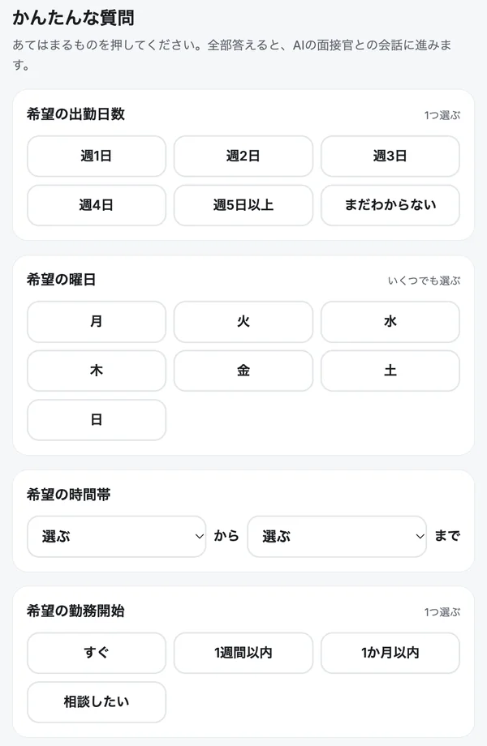
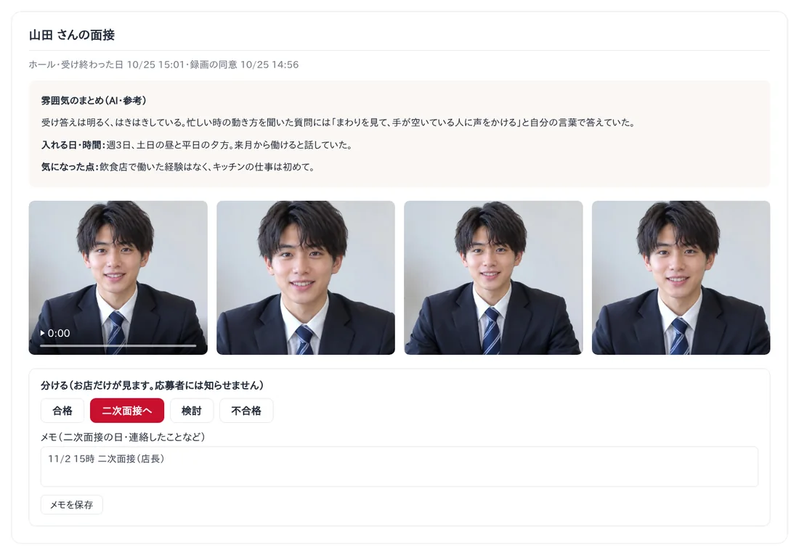

アルバイトの応募が来たら、電話をかけ直して、面接の日を決めて、当日は手を止めて30分。ところが当日に連絡なしで来ない――。飲食店の店長にとって、採用の面接は「時間がかかるのに、結果が読めない」仕事です。
この記事では、アルバイトの面接で時間がかかるところと、面接を自動化する方法、そしてAIに一次面接をまかせるときの流れと注意点をまとめました。
この記事でわかること
- アルバイトの採用で、店長の時間がとられているところ
- 面接を自動化する3つの方法（日程調整・録画面接・AI面接）
- AIの一次面接で、お店に何が届くのか
- 面接で聞いてはいけないことと、AI面接を使うときの注意点
アルバイトの面接で時間がかかるところ
どれも「応募者とお店の時間を合わせる」ことから起きています。時間を合わせずに、応募者の都合のいいときに受けてもらうことができれば、ぐっと楽になります。
面接を自動化する3つの方法
- 日程調整を自動にする予約のページから、応募者に空いている枠を選んでもらう方法。やりとりは減りますが、面接そのものはお店の人がします。
- 録画面接決まった質問に、応募者が動画で答えて送る方法。時間は合わせなくてよくなりますが、話がふくらまないので、人がらが見えにくいこともあります。
- AIの一次面接応募者は条件をボタンで選び、AI の面接官と1分ほど話します。話している姿が録画されるので、決まった文章を読むだけの録画面接よりも、その人らしさが伝わります。
いちばん手間が減るのは、AIの一次面接です。お店は URL を送るだけ。応募者は夜中でも休みの日でも、2分ほどで受けられます。
AIの一次面接でできること



ポスポスのAI面接の流れ
ポスポスは、レジ・給料・シフトの管理に、AIの一次面接がついたクラウドPOSレジです（世界初※面接を自動化したPOSシステム）。使い方は5つのステップです。
- 職種を選んで URL を作るポスポスの本部の画面「AI面接」で職種を選ぶだけ。お店から聞きたいことは3つまで足せて、「いつもの質問」として保存できます。URL は1回だけ使えて、14日まで有効です。
- LINE で応募者に送る送る文はアプリが作ります。ボタン1つで LINE が開くので、そのまま送るだけ。
- 応募者がスマホで答えるURL を開くだけで、会員登録はいりません。出勤日数・曜日・時間帯・通勤・経験などをボタンで選んで（1分ほど）、録画に同意してから AI の面接官と1分ほど話します。
- お店に結果が届く話している姿の録画・顔の写真3枚・選んだ答えの一覧・話し方の雰囲気のまとめ・会話の文字が届きます。
- お店が分ける合格・二次面接へ・検討・不合格に分けて、メモを残せます。応募者には知らせません。採用するかどうかは、お店の人が会って決めます。

聞いてよいこと・聞いてはいけないこと
面接の質問は、AIでも人でも同じルールです。厚生労働省は「公正な採用選考」として、仕事をする力と関係のないことで判断しないよう求めています。お店の質問を足すときも、次のことは聞かないようにします。
使うときに気をつけること
- 合否はお店が決めるAIのまとめは参考です。録画や会話を見て、お店の人が決めます。
- 録画は同意のうえでポスポスでは、応募者が録画に同意しないと面接がはじまりません。録画・写真・会話はそのお店の採用の判断だけに使います。
- 消すことを決めておくポスポスの録画・写真・会話は90日で自動で消えます。いらなくなったら、お店の画面からいつでも消せます。
- 採用の前に会う働いてもらう前には、お店の人が会って、本人確認と働く条件の説明をします。
料金は1店舗ごとで、プランとお店に合わせてお見積もりします。最初の1か月は無料でお試しできるので、0円から始められます。
よくある質問
AI面接で、AIが合否を決めるのですか？
いいえ。AI は話し方の雰囲気をまとめるだけで、見た目や合否については何も言いません。録画と写真を見て、お店の人が決めます。
応募者は何か準備がいりますか？
いりません。送られた URL をスマホで開くだけです。会員登録もいりません。カメラとマイクを使うので、静かで明るい場所で受けてもらいます。
面接の録画や写真はどうなりますか？
応募者が録画に同意してから面接がはじまります。録画・写真・会話は90日で自動で消え、お店の画面からいつでも消せます。ほかのお店からは見えません。
AI面接にお金はかかりますか？
ポスポスのスタンダードプラン・個別プランの料金の中で使えます。追加の料金はかかりません。ライトプランでは使えません。
対面の面接はしなくてよくなりますか？
AI面接は一次面接（ふるいわけの前の情報集め）です。働いてもらう前には、お店の人が会って、本人確認や働く条件の説明をしてください。
※ 画面は見本です（お店・応募者は架空）。機能や料金は2026年10月時点の内容です。AI面接はスタンダードプラン・個別プランで使えます（追加料金なし。ライトプランでは使えません）。※「世界初」は、2026年10月 当社調べ。POSレジに、AI による応募者の一次面接の機能を標準でつけたサービスとして。